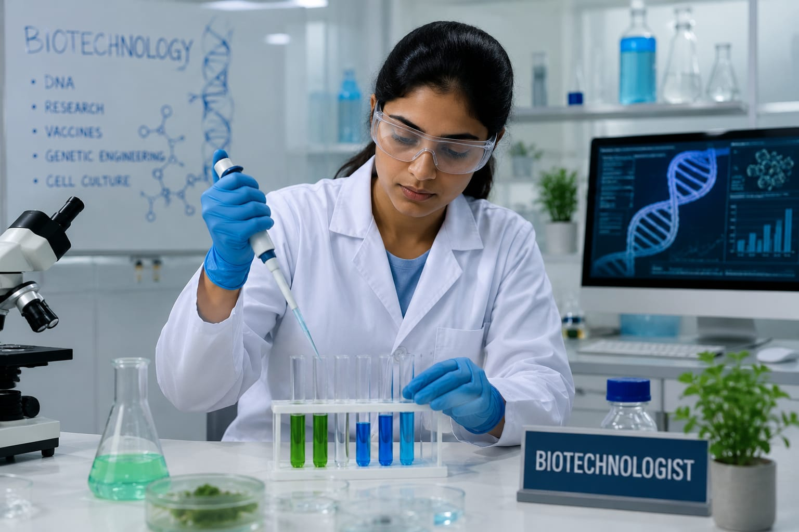

- Imagine a dangerous disease spreading in many places.
- Scientists want to create a new vaccine to protect people from this disease.
- To make this vaccine, some experts work in laboratories and perform experiments using living cells and bacteria.
- These professionals are called Biotechnologists.
- 👉 In simple words: Biotechnologists use science and technology to create medicines, vaccines, and other useful products.
Biotechnologist
🧑🎨 What do they do?

🎓 How to Become a Biotechnologist
The courses to pursue this career are given below :
These Biotechnology programs help students learn about genetics, laboratories, medicines, vaccines, microbiology, and scientific research.
B.Sc. / B.Sc. (Hons.) in Biotechnology
Duration: 3 – 4 Years
Eligibility: 10+2 Pass in Science Stream with Physics, Chemistry, and Biology (PCB)
Entrance Exam: CUET UG / University Entrance Exam / Board Merit-Based
Integrated B.Sc. + M.Sc. in Biological Sciences
Duration: 5 Years
Eligibility: 10+2 Pass in Science Stream with Physics, Chemistry, and Biology (PCB)
Entrance Exam: NEST / CUET UG / University Entrance Exam
Note: Biotechnology programs include subjects like genetics, microbiology, biochemistry, laboratory research, and biotechnology applications.
These Biotechnology specializations help students learn advanced laboratory research, genetics, molecular biology, pharmaceuticals, and scientific innovation.
M.Sc. in Biotechnology
Duration: 2 Years
Eligibility: B.Sc. in Biotechnology, Life Sciences, Microbiology, or related Biosciences
Entrance Exam: GAT-B / IIT JAM / CUET PG
Post Graduate Diploma in Industrial Biotechnology (PGDIB)
Duration: 1 Year
Eligibility: B.Sc. Graduation in Life Sciences or Biological Sciences
Entrance Exam: Institution Entrance Test & Interview
Ph.D. in Biotechnology / Molecular Biology
Duration: 3 – 5 Years
Eligibility: M.Sc. in Biotechnology or related Biological Sciences
Entrance Exam: CSIR-UGC NET / DBT-BET (JRF) / DHR-BRET / University Ph.D Entrance Exams
📝 Exam Details
(Click on the exam name to see full details)
GAT-B IIT JAM CUET PG CSIR-UGC NET DBT-BET (JRF) DHR-BRET University Ph.D Entrance ExamsNote: Advanced Biotechnology programs include genetics, molecular biology, microbiology, pharmaceutical research, and laboratory-based scientific studies.
Note:
(Age limits, marks, and admission process may vary depending on the college or state.
Below are some colleges that offer these courses.
These courses are available in many colleges and universities across India. You can choose colleges based on your location, budget, and entrance exams.)
🏛️ Colleges offering these courses in India
(Tap on a college to view details)
After Class 12
Fergusson College, Pune St. Xavier's College, Kolkata Christ University, Bengaluru Jamia Millia Islamia (JMI), New Delhi St. Joseph's University, Bangalore CUSAT, Kerala AMITY University, Delhi Bangalore University, KarnatakaAfter Graduation
Jawaharlal Nehru University (JNU), New Delhi Indian Institute of Technology (IIT) Bombay Indian Institute of Technology (IIT) Roorkee Banaras Hindu University (BHU), Varanasi University of Hyderabad (UoH), Hyderabad Pondicheery University Regional Centre for Biotechnology, Faridabad Lovely Professional University, PunjabSTEP 1
Imagine you are working in a science laboratory as a Biotechnologist.
STEP 2
You use microscopes, test tubes, and laboratory machines for experiments.
STEP 3
You study germs, cells, and bacteria to understand diseases.
STEP 4
You help scientists create medicines and vaccines.
STEP 5
You carefully check and record the experiment results.
STEP 6
If science experiments and laboratory work excite you, this career may suit you.
Where do Biotechnologists work? (Job Roles + Growth)
Biotechnologists work in : Research centers and laboratories, pharmaceutical companies, hospitals, agricultural organisations, food industries and universities.
🟢 Beginner Roles
Research Assistant
(After B.Sc. in Biotechnology)
Helps scientists perform laboratory experiments.
Laboratory Technician
(After B.Sc. in Biotechnology / Life Sciences)
Handles laboratory equipment and testing work.
Quality Control Analyst
(After B.Sc. in Biotechnology)
Checks if medicines and products are safe.
🔵 Mid-Level Roles
Research Scientist
(After M.Sc. in Biotechnology)
Develops new medicines, vaccines, and scientific solutions.
Agricultural Biotechnologist
(After M.Sc. in Biotechnology / Agriculture)
Improves crops, seeds, and farming methods.
Bioinformatics Specialist
(After M.Sc. in Biotechnology / Bioinformatics)
Uses computers to study biological data.
🟣 Advanced Roles
Biotech Project Manager
(After Ph.D. / Industry Experience)
Leads biotechnology research and product projects.
Senior Research Scientist
(After Ph.D. in Biotechnology)
Conducts advanced scientific research and discoveries.
Biotechnology Consultant
(After Ph.D. / Advanced Experience)
Advises companies on biotechnology solutions and products.
Biotechnologists can work in healthcare, agriculture, medicine, and scientific research around the world.
Many countries hire biotechnology experts for research and innovation.
International Pharmaceutical Companies
Work on creating medicines, vaccines, and healthcare products for global companies.
Global Research Laboratories
Participate in scientific research related to genetics, diseases, and biotechnology.
Agricultural Biotechnology Companies
Help improve crops, food production, and farming technologies.
Healthcare & Medical Research Centers
Support medical testing, disease research, and healthcare innovation.
Environmental Organizations
Work on projects related to pollution control, clean energy, and environmental protection.
International Universities
Work as researchers, professors, or laboratory scientists in universities abroad.
(Click Yes or No for each question)
1. Are you interested in scientific experiments?
2. Have you ever thought about how scientists discover new medicines and vaccines?
3. Are you interested in learning how living organisms are used in science and technology to create useful products?
4. Imagine you are working as a Biotechnologist in a laboratory. You receive a water sample from a nearby lake for testing. You test the sample to find out if it contains any harmful substances or microorganisms. You study the results and make a report based on your findings. Would you be interested in doing this?
5. Imagine scientists are trying to develop a new vaccine for a dangerous disease. You work in the laboratory with the research team. You prepare the samples and helps to do different experiments. You help the research team to understand what is working and what is not working. After months of work, your team finally develops the vaccine. Does this excite you?